2020/0531Sun夢でもし逢えたら
素敵なことねー
あなたに逢えるまでー
なんか、昔からふと歌いたくなる曲です。☺️
前の林ちゃんのブログに私の名前が書いてくれてありがとう。☺️
話題に出してくれるだけで嬉しいのにとても嬉しい事が書いてあって
ブログ読んでてほっこりにこにこしてました。
まだちゃんと話す機会が無いまま
リモートでのお仕事が続いていますが
直接お話できるのを楽しみにしてます。☺️
勿論、皆さんとも
どんな形でであれ繋がりは感じていたいです！！
自粛期間は一応、解除となってはいますが
これからは新しい生活を
でも、ストレスをため過ぎないように
毎日を楽しみましょう。☺️
私の最近の癒やしはお花を見る事です。
心が落ち着きます
お花屋さんでお花を選んでるときがときめく瞬間なのです。
お花いいですよね。
お裾分けです。☺️
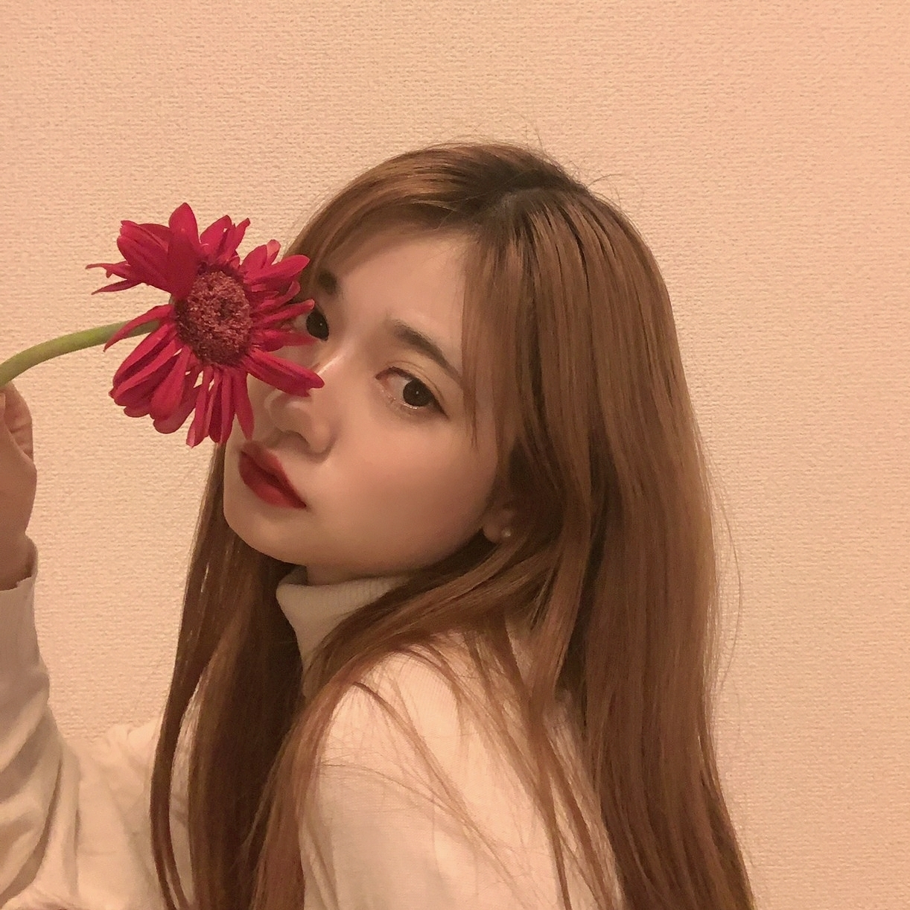
セブンイレブンさんにて
乃木坂46くじ
私もやってみようかなー。☺️
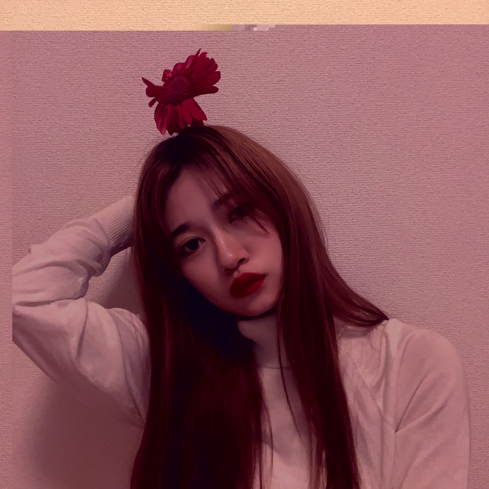
2020/0525Mon白い薔薇
世界中の隣人よ
解禁となりました。☺️
スタッフさんもメンバーも
常に最善を考えて行動に移して
そんな乃木坂46が素敵だなーと改めて自分も参加しながら思いました。
是非、まだ観てない方はチェック宜しくお願い致します。☺️
そして、今回も質問返しさせて頂きます。
・どうせこのコメントはらんぜの目には止まらんぜってね
→ちゃんとみてるよ？
・蘭世工事中で絶対入れたい回は！？
→ありがたい事に多過ぎて迷いますね。
逆に皆さんの思う蘭世工事中はどう思いますか？！
・メイクのポイント教えてほしいです！
→いかに自分がときめくかです。
でも、リップの色味で顔の印象が結構変わる人なので私は
メイクどんなに薄くても
赤リップ塗ったら濃いめに見えて
お強くなるので
リップがポイントですね私は！
・質問かあ。
女の子のファンでも嬉しいですか？
あと、毎日のようにコメント送ってるけど迷惑じゃないかも心配です、、泣
→そんなこと言わないで！！！
毎日私の為に時間を使ってくれてありがとう
嬉しいからどうかこれからも気軽にしてね。☺️
・作詞作曲に興味ありますか？？
→凄くあります。
幼稚園児くらいの頃は
作詞作曲が私の一番の楽しい遊びだったので。
昔から興味津々です。
・乃木坂で好きな制服は何枚目のものですか？？？
らんぜが成人式で着てたデザインと同じ振袖を振袖屋さんで見つけて、成人式それを着ることにしました！うれしい❁
また更新待ってるね♪ いつもありがとう♡
→全部好きです、選べなかったけど
コメントが嬉しすぎてお返事しちゃいました。
人生の大切な節目にありがとう。☺️
王道だけど赤色の中でも力強いデザインと色合いが私もお気に入りでした。
ありがとう。
・質問なんですけど、
次髪染めるとしたらどんな色にしたいですか？
(今はコロナのせいで美容院行けないけど、、)
赤のときすっごい似合ってて可愛いしかっこいいし最強だったので気が向いたらまたやってください、、笑
→次、どうしましょうね！！
私のチャレンジ精神を変化を褒めてくれてありがとう
これからも色んな私を受け止めて一緒に楽しんでください。☺️
最後に美容室に行ったときに
ずっと赤味を入れてたので
黄色味を入れてもらい出来るだけあ明るく今回の制服に合うようにカラーしていたのですが
今は色落ちして絶賛明るい期間です！
でも、これも新たな一面が自分でも発見出来て楽しんでます！！
何にしようね。一緒にわくわくしよう。☺️
・らんらんさんの思う福岡の第一印象はなんですか?
→おっとっととっとって、、、
ご飯がばりうまかー
・蘭世ちゃんのファッションとメイクのこだわりはなんですか？
→自分がいかにときめくか
・質問です！
緑茶ハイは最近も飲んでますか??
→全然飲んでいません。☺️
・サングラスとか眼鏡ってどこで買ってますか？？
→古着屋さんでも買いますし
メガネショップでも買います
ブランドでも買います
決まりはないです！！
・前髪がある蘭世さんも大好きなのですが、前髪分けの蘭世がおとなっぽくてより大好きなので、今後前髪を分ける予定はありますか！！
→どっちもやります
褒めてくれてありがとう。
本当に嬉しいです。
色んな髪色も髪型も色んな人に出逢うため変えてるのでそこはお任せください。☺️
・今ポルトガル語を勉強し始めたのですが、やってみたい言語とかありますか？？
ポルトガル語って同じ意味の単語でも男性が使う用と女性が使う用で分かれてて難しいのです...
→ポルトガル語いいですね。☺️
お母さんと一緒に韓国語は前からお勉強していて
家での簡単な会話とか連絡するときは韓国語を使ったりもします。
この前家族の日常動画をまわしていたら韓国語でママと会話してて
妹に何言ってるか分からないって改めて言われました。
そして何故か最近覚えた中国語は
「妹妹」
中国にお邪魔することもグループとしては多いので
覚えたいなーと思っていてら
まさかの学んだ単語、、、
発音が可愛くて
中国語は発音が難しいです、、、
タイ語も男女で違いますよね
難しいけど楽しいですよね。☺️
以上、沢山の質問、コメント本当にありがとうございます。
またいつでも気軽にしてくださいね。☺️


私はあたたかい言葉にはいつもパワーを貰ってます。
この人達の為に頑張ろうって思えます。
誰かがつくりあげた
ヒーローだって誰かにとってはヒーローではない
だから、ストーリーが生まれるのであって
何が正しいとか正解がないからこそ
それを表現する言葉や行動には無限の可能性があります。
伝えること
喜ばせること
悲しませること
支えられること
傷つくこと
言葉とは誰にでも与えられた最大の武器です。
大切に使いたいです。
改めてね、こんな時だからこそ
会えなくて人のあたたかさを体温で感じられない時代だからこそ
皆さんのあたたかい言葉は支えになります。
私はずっと言葉を武器にして生きてきたつもりです。
会えないからこそ
言葉でしか会えないから
いつもより、優しく言葉をかけてあげたいです。
西野さんお誕生日おめでとうございますだー。☺️
かりんちゃんもフライングおめでとう。☺️
また、二人とも会いたいです！！

こちらMV撮影中に動画だと思いボタンを押した瞬間写真で失敗した画像です。
お納めください。
2020/0519Tue№2
2回目の質問返しブログです。☺️
今回は前回よりも多めです。
是非、最後までお付き合いください。
・作ってみたい料理はなんですか？
→お菓子の方が難しいそうなので
お菓子作りしてみたいです。
・蘭世ちゃんは人の顔覚えたりするのは得意ですか？？
→記憶力はあるほうです
文字を覚えるのは苦手なのですが
お顔だけなら割と早いと思います！
・マヨネーズは好きですか？サラダにかけるならドレッシングとマヨネーズどっち派ですか？ もしドレッシング派だったらなんの種類が好きか教えてください！♪
→最近はシーザードレッシングが好きです。☺️
・身長低い人とかどう思いますか？
→素敵な個性だと思います！
・香水とか使っていたら何使っていますか？
→香水は毎日気分やお仕事の雰囲気お天気に合わせるなどでその日その日で変えてます。
違う香りを混ぜたりもするから
同じものがないかもです。
・もし自分が日本語の他にもどこかの言語を1つだけ
自由に話せるとしたら、何がいいですか？
→英語
無難ですかね、、、
・フォトブックや写真集が出せることになったらどこで撮影したいですか？あと、どんなコンセプトにしたいかも知りたいな〜。
→もう、私の頭には沢山ありますよ。
こんなお洋服にしよう
場所は迷うけど
お洋服のテーマは割とあるかもです。
ネットや本をみてこんな雰囲気がいいなーってインスピレーションしてたりするので
それをデータとして保存もしてます、、、！
まだ、他のメンバーがやってない事を盛り込みたいなーって
やりたい事も秘密だけど結構明確ですね。☺️☺️
・蘭世が乃木坂工事中に感じている疑問はなんですか？？笑
→個人フューチャーまたやりませんか！！！
あと、日村賞何卒
・蘭世ちゃんはファンにメールとかブログとかたくさんしてくれるけど、逆にファンにしてほしいこと、してもらったら嬉しいことはありますか？
なにか蘭世ちゃんの支えになれること、あるかな。
→私を応援してくださる皆さん
乃木坂４６を応援してくださる皆さんは優しい人が多い。
その気持ちをぶつけてくれた事が嬉しいです。
これからもその気持ちを
声にしてくれたり
こういうブログのコメントとか
些細な事って思わずに
付いてきてくれれば何より嬉しいです。☺️
これからも末永くよろしくねー。
・声低い人のことどう思う？
→素敵なことだと思います。
お父さんお母さんや御先祖さんに感謝！！
・就職活動しているのですが、面接で自分の個性を出す方法とかありますか？
→緊張しないこと
もう、潔くカッコつけないで嘘付かず
そしたら質問にもスラスラ返せる気がします。☺️
そして、緊張和らぐと思う
いつもの自分でいれるから。
自分に嘘付かず気取らず
そんな素の自分を選んでくれる会社に出会えますように。
生きてるだけで皆オリジナルですから自分を信じて頑張ってください
心から応援してます！！
・これからあまり日焼けしないようにしたいんですけど、学校もあるのでなにかいい方法ありませんか？
→私はズボラさんなので
あれこれしてませんが
日焼け止めスプレーだけは忘れずにしています。
シンプルな努力
大事続けられる努力が一番です。☺️
これなら簡単だと思うし学生さんでもお手軽にできると思う。
小さな事からコツコツ
・蘭世さんは免許持ってますか？もし無かったら取得したいと思ってますか？
→持ってません。
今のところは予定なしです。
ただ、お車に乗るのは小さな頃から大好きです。
ドライブして音楽を聴くのが大好きです。
・質問です！
今度、大学で学生コーチをすることになったのですが、
後輩に指導とか教える時に気をつけてることってありますか？
蘭世さんの意見を参考にしたいです！
ぜひよろしくお願いします
→どんな立場でも
先輩だから偉いとか後輩だからこうしなくてはならないみたいな環境よりかは
お互い違う立場だからこそ見え方、捉え方が絶対に違うだろうから
そこを攻めずに
こんな意見もあるよねって全てを包み込んであげることが大切だと私は思います。
大変だと思うけど頑張ってください。☺️
・質問失礼します☺︎︎
高校生になってメイクも始めたいんだけど、蘭世ちゃんのメイクの仕方とかオススメのブランドとかが知りたいです( ¨̮ )あとスキンケアの方法とかも気になります◎
大好きです〜会いに行きたい( ᵒ̴̶̷̥́ _ᵒ̴̶̷̣̥̀ )
→メイクデビューおめでとう。☺️
偉い素敵なことだー
私も初めはかりんちゃんとかに
薬局に連れてって貰って化粧品揃えてました。
お母さんや周りの先輩に沢山聞いて
リーズナブルな物から
私にはこの色が合うんだなーって
探していけばいいんじゃないかな。☺️
私も好きよ!
応援してます!
頑張ろうね!
・蘭世ちゃんはパーソナルカラー診断したことある？？
色白だからブルベなのかな ？？
→そのブルベとかなんとか
教えてほしいです、、、!
詳しい方にお聞きしたいです！
・大切にしている言葉とかありますか？？
→ごめんなさいより有難うを意識して言うようにしています。☺️
エレベーターで
ボタン押してもらったら
ごめんなさいっていう文化
日本にはあるけど
ごめんなさいより有難うの方がその一瞬がキラキラするから
・小顔を保つためにしていることがあれば教えて頂きたいです！
→美容系やこの質問が多かったので
すみません。
正直に何もしてないです、、、
・質問です！
蘭世のように見た目を変えられる勇気が出ないです
なぜ髪型やメイクを頻繁に変えても全て自分のものにできるのか知りたいです！
→自分を信じて
世界で一人の自分なので周りの誰かにいいねって評価されたり
駄目ねって評価されることもあるだろうけど
私の正解は私だと思って
悩むこともあるけど世界で一体の自分を信じてあげることですかね、、、！
・粉もんは好きですか？
→食べ物全て好きです。
・すきです。
→私もです。
・中3です
学生時代大切なことはなんですか？
→人の言うことをしっかり受け止め聞き
自分を見失う前に
人の言うことを適度に聞かない
何事にも恥ずかしがらず素直に感謝すること。
沢山のコメント心より感謝します。☺️
また、もう少し気長にコメント返ししますねー。
色々、リモートでお仕事始まってきました。
ブログだったり、SNSを通しても
乃木坂４６としてできる事は沢山ありそうです。☺️
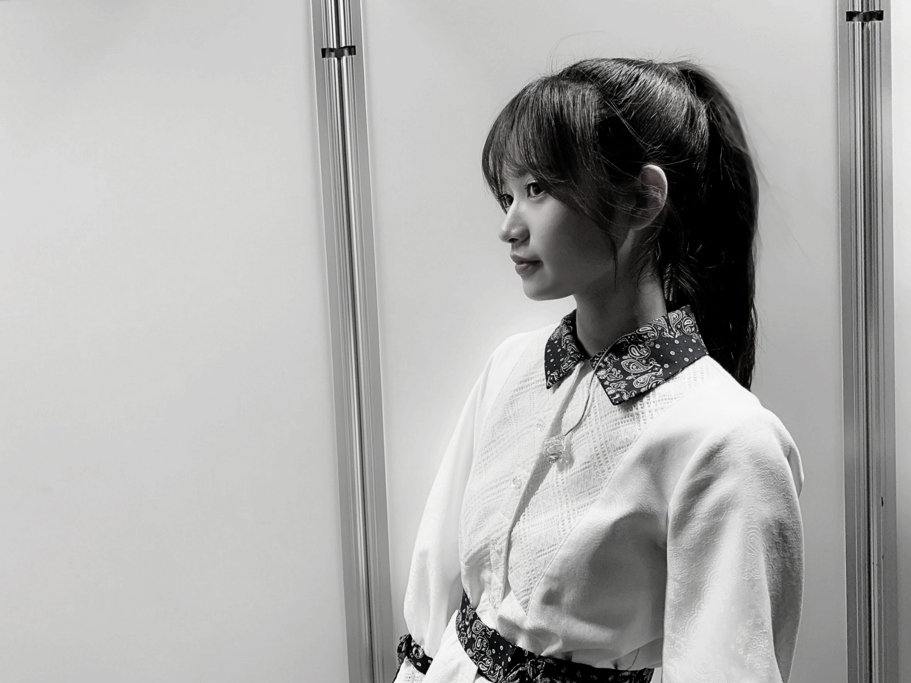
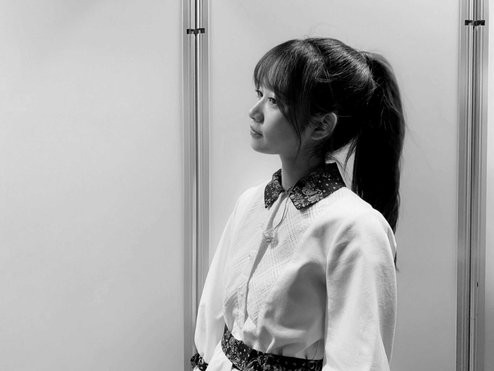
ポニーテールっていいですよね。
夏を感じます。
窓を開けると外から夏の香りがしてきました。
今年の夏も楽しい夏になりますように。☺️
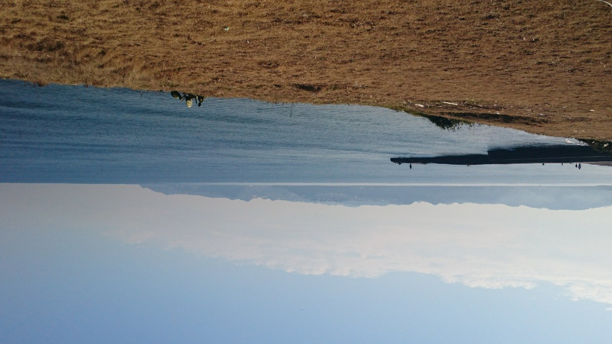
2020/0514Thu日村さんお誕生日おめでとうございます。☺️☺️
沢山のコメントありがとうございます。☺️
1000件以上ものコメントを頂きまして今、反映されているものは全て読ませてもらいました。
すべての人に感謝です。
これから更新していくブログで
前回募集したコメントに少しずつ小出しでお返事していきますね。☺️
本日はこちらにお返事です。
・前に小学生の時に花より男子が好きで毎週の放送を楽しみにしてたと書いてあったけど、F4で好きな人は誰ですか？
→迷う。
道明寺さんに結局揺らぐと思う。
・雨は好き？
→雨は生きてく上で大切なので
雨にも感謝大好きですよ。
・スキップできますか？
→スキップ大好きです。☺️
・らんぜは、いつか宇宙旅行に行きたいですか？
→行きたいけど
今の私には訓練に耐えれるスキルが無い気がするので安易に宇宙行きますとかは言いたくないです。
叶いそうにないことは口にしません。☺️
・どうしたら蘭世さんのようなカッコいい人になれますか？
→ありがとう
周りが私も強くしてくれます。
皆生きてるだけで十分カッコいいと思いながら私は生きてます。
・ひょろひょろくんもコロナに負けず元気ですか？☺︎
→凄く元気だよ。☺️
心配してくれてありがとう
21年間ほぼ毎日一緒に寝てます。
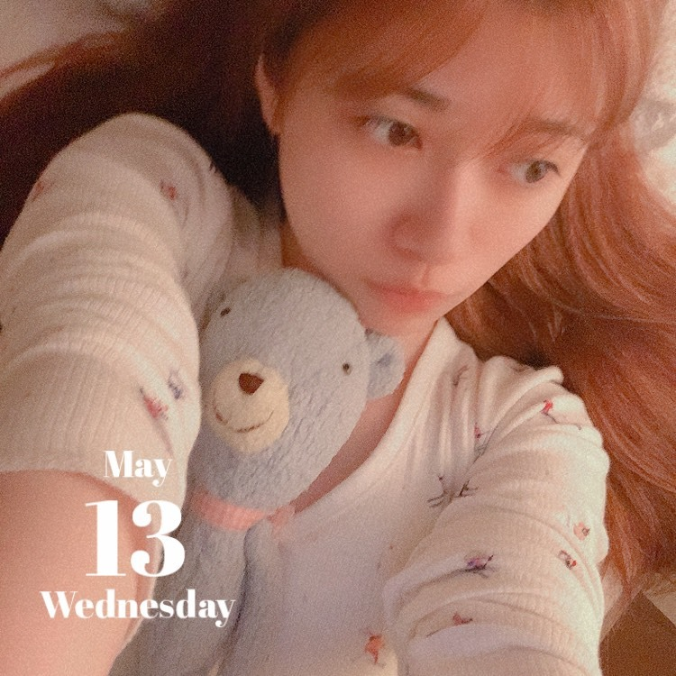
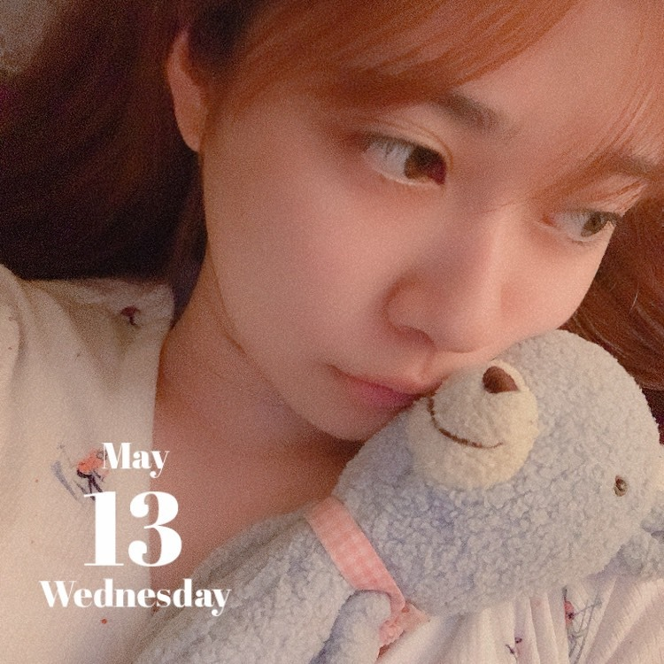
love。
これからも不定期で予告もなくコメントにお返事など開催したりしますので
気軽に何でもコメントしてくださいね。
皆の日記みたいなコメントとかも好きだよー。
少しですがお返事させていただきます。☺️
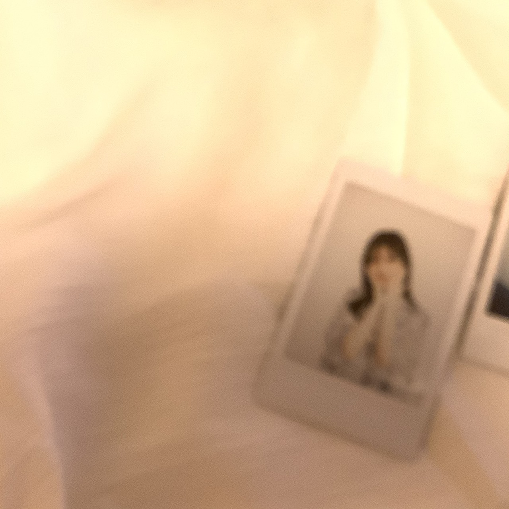
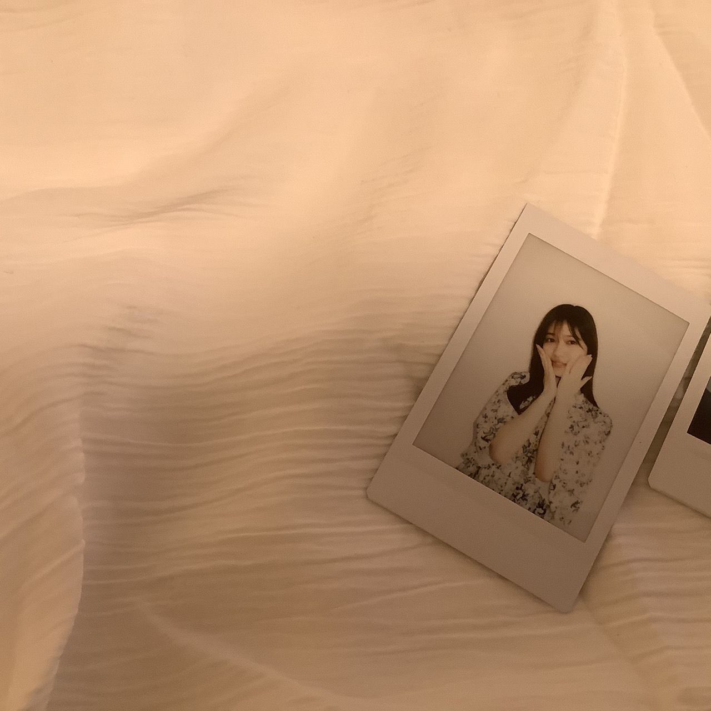
ありがとうございました。
またね。☺️
2020/0511Monhome
メガネ可愛いけど普段からはあまりかけなくて、、、
今年はメガネやサングラス沢山かけたいです。☺️
今日は夏を感じる暑さですね
サングラス必要なくらいの暑さです。☺️
こんなにカラッと晴れていますが
不要不急の外出はお控えくださいね。
早く皆でお外で自由に遊んだりしていた日々に一日も早く戻りますようにー。
去年はアクセサリーとかサングラス全然使わなかったから
今年は使いたいな！！！
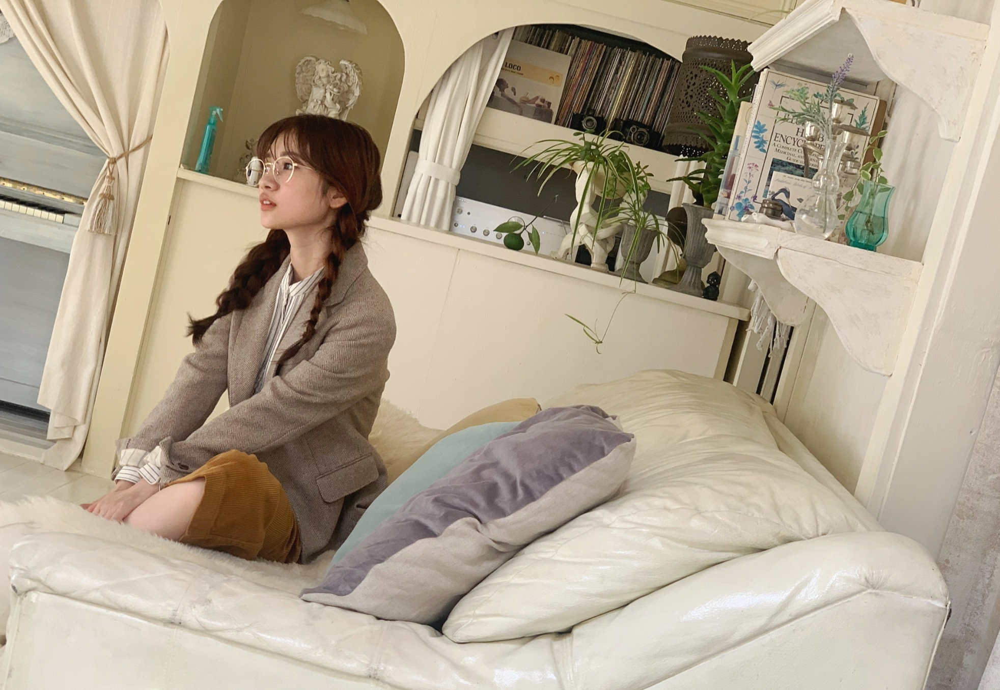
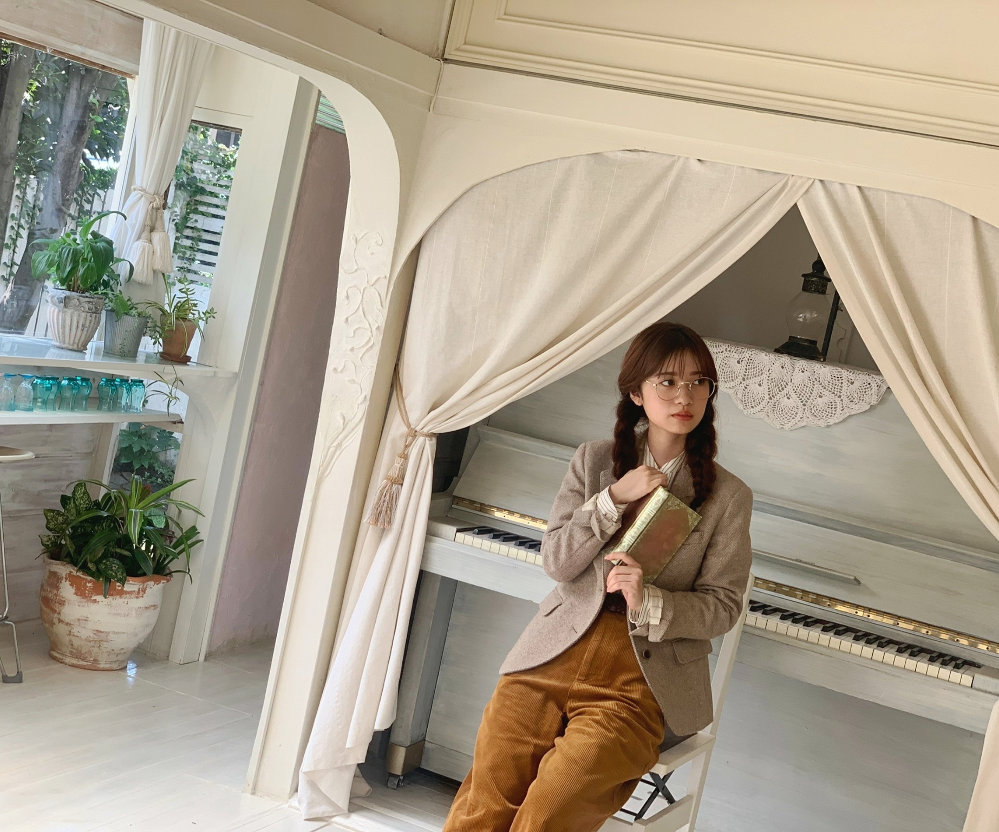
久々に質問返しでもさせていただこうかなと思っております。☺️
このブログのコメントに質問ください。
いつも、コメントありがとうございます。
多くいただいた質問や
特に目に留まったもの気まぐれに
少しずつお返ししますね。☺️
2020/05/11 16:24｜個別ページ｜コメント(1284)